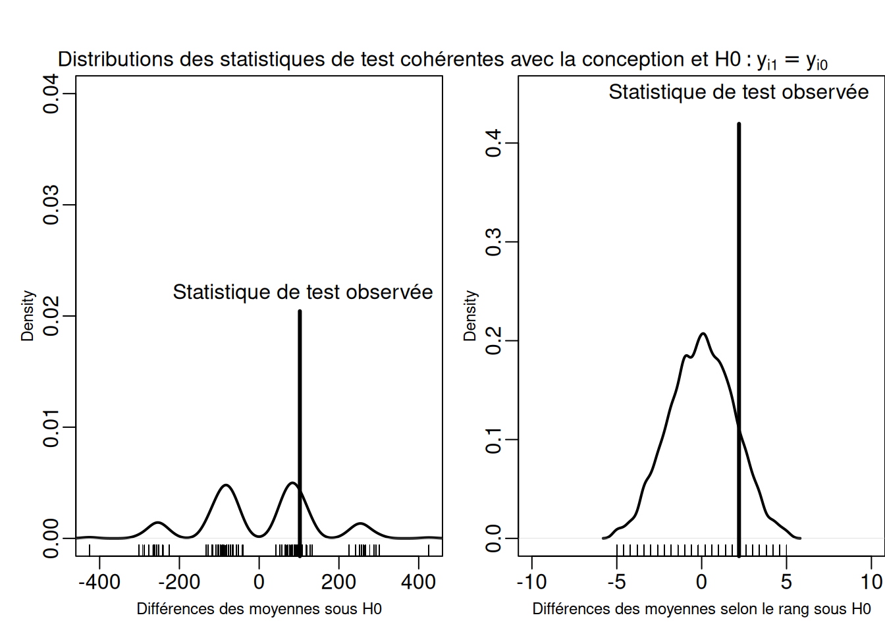
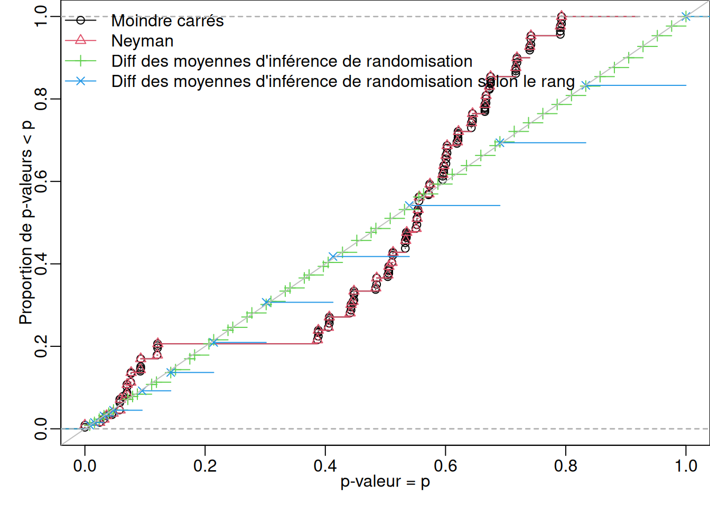

Lorsque les chercheurs rapportent que “L’effet moyen estimé du traitement est de 5 (p=0,02)”, ils utilisent un raccourci pour dire que les résultats expérimentaux ne sont pas compatibles avec l’idée que le traitement n’a eu aucun effet. Ce guide explique les éléments d’un test d’hypothèse : hypothèses nulles, statistiques de test, distributions de référence, valeurs p et les erreurs qui surviennent lors de l’utilisation des valeurs p pour prendre des décisions.
1 Les tests d’hypothèse présentent, de manière compacte, les informations contenues dans une conception de recherche et proposent une solution pour évaluer les effets d’un traitement
Lorsque les chercheurs signalent que “l’effet moyen estimé du traitement est de 5 (\(p=0,02\))”, c’est un raccourci pour dire : “Cher lecteur, au cas où vous vous demanderiez si nous pourrions distinguer le signal du bruit dans cette expérience en utilisant des moyennes, et bien nous le pouvons. Les résultats expérimentaux ne sont pas cohérents avec l’idée que le traitement n’a eu aucun effet.” Les gens utilisent des tests d’hypothèses dans les études d’observation ainsi que dans les expériences randomisées. Ce guide se concentre sur leur utilisation dans les expériences randomisées ou les conceptions de recherche qui tentent d’organiser les données de sorte qu’elles paraissent “aléatoires” (comme les conceptions de régression par discontinuité ou d’autres conceptions naturelles ou quasi expérimentales).
La \(p\)-valeur résume la capacité d’un test donné à distinguer le signal du bruit. Comme nous l’avons vu dans 10 choses à savoir sur la puissance statistique, le fait qu’une expérience puisse détecter un effet de traitement dépend non seulement de la taille de l’échantillon expérimental, mais aussi de la distribution du résultat 1, la distribution du traitement et la force substantielle de l’intervention elle-même. Lorsqu’une chercheuse calcule une \(p\)-valeur à la suite d’un test d’hypothèse, elle résume tous ces aspects de la conception de recherche en fonction d’une affirmation particulière — généralement l’affirmation selon laquelle le traitement n’a eu aucun effet causal.
Le reste de ce guide explique les étapes d’un test d’hypothèse : à partir de l’hypothèse nulle (l’affirmation selon laquelle le traitement n’a eu aucun effet causal), vers des statistiques de test résumant les données observées (comme une différence des moyennes), jusqu’à la création d’une distribution de probabilité qui permet le calcul d’une \(p\)-valeur. Il aborde également l’idée de rejeter (mais ne pas accepter) une hypothèse et aborde la question de ce qui fait un bon test d’hypothèse (un test d’hypothèse idéal devrait rarement mettre en doute la vérité et distinguer même les signaux faibles du bruit). Voir également 10 choses à savoir sur l’inférence de randomisation pour plus de détails sur ces idées.
2 Dans une expérience, une hypothèse est un postulat sur des relations causales non observées
Nous menons des expériences pour faire des comparaisons causales interprétables (Kinder and Palfrey 1993), et nous estimons souvent les effets causaux moyens. Qu’est-ce que le test d’hypothèse a à voir avec l’inférence causale? Dans cette section, nous expliquons la distinction entre : évaluer des assertions sur les effets causaux et faire les meilleures suppositions sur les effets causaux.
2.1 Un aperçu du problème fondamental de l’inférence causale et une introduction à quelques notations
Dans 10 choses à savoir sur l’inférence causale, souvenez-vous que la conceptualisation contrefactuelle de la causalité utilise l’idée de résultats potentiels pour définir la cause et formaliser ce que nous entendons lorsque nous disons “X cause Y” ou “Fumer cause le cancer” ou “L’information augmente la conformité fiscale”. Bien qu’il existe d’autres façons de penser la causalité (Brady (2008)), l’approche contrefactuelle suggère que nous imaginons que chaque personne, \(i\), paierait ses impôts, \(y_{i}\), si on lui donne des informations sur l’usage de ces taxes. \(Z_i=1\) signifie que l’information a été donnée à la personne et \(Z_i=0\) signifie qu’aucune information n’a été donnée. Donc \(y_{i,Z_i=1}\) désigne le montant des taxes payées par quelqu’un à qui on a donné des informations et \(y_{i,Z_i=0}\) désigne le montant des impôts payés par quelqu’un à qui on n’a pas donné d’informations. Dans une expérience réelle, nous pourrions randomiser la fourniture d’informations aux citoyens, afin que certaines personnes aient l’information et d’autres pas. On observe les impôts payés par les gens dans les deux conditions mais, pour une même personne, on ne peut observer que les impôts qu’elle paie dans l’une des deux conditions. Qu’est-ce que signifie “l’effet causal” ? Cela signifie souvent que le résultat dans une condition (\(y_{i,Z_i=1}\) s’écrit un peu plus simplement \(y_{i,1}\)) et le résultat dans l’autre condition (\(y_{i,Z_i=0 }\) ou \(y_{i,0}\)) diffèrent pour une personne donnée, de sorte que nous écririons \(y_{i,Z_i=1} \ne y_{i,Z_i=0}\).
Nous ne pouvons pas observer à la fois\(y_{i,1}\) et \(y_{i,0}\) pour chaque personne — si nous avons donné des informations sur les impôts à une personne nous observons \(y_{i,1}\) et donc nous ne pouvons pas observer comment elle aurait agi si elle n’avait pas reçu cette information (\(y_{i,0}\)). Ainsi, nous ne pouvons pas utiliser l’observation directe pour en savoir plus sur cet effet causal contrefactuel et nous ne pouvons que faire des inférences. Holland (1986) appelle cette incapacité à utiliser l’observation directe pour en savoir plus sur la causalité contrefactuelle le “problème fondamental de l’inférence causale”.
2.2 Un aperçu des approches basées sur l’estimation de l’inférence causale dans les expériences randomisées.
Les sciences statistiques ont abordé ce problème de trois manières principales. C’est-à-dire, lorsque nous nous demandons : “Est-ce que l’information amène les gens à payer leurs impôts ?” nous avons tendance à dire : “Nous ne pouvons pas répondre directement à cette question. Cependant, nous pouvons répondre à une question connexe.” Dix types d’effet de traitement que vous devriez connaître décrit une idée que nous créditons à Jerzy Neyman où un scientifique peut estimer les effets causaux moyens dans une expérience randomisée même si les effets causaux individuels ne sont pas observables. Le travail de Judea Pearl sur l’estimation de la probabilité conditionnelle d’un résultat basé sur un modèle causal de ce résultat est similaire à cette idée, où l’accent est mis sur les probabilités conditionnelles des \(y_{i}\). Ces deux approches répondent à la question causale fondamentale en dirigeant la question vers les moyennes ou les probabilités conditionnelles. Une approche connexe de Don Rubin commence par prédire les résultats potentiels au niveau individuel en utilisant des informations de base et un modèle de probabilité de \(Z_i\) (tel que, disons, \(Z \sim \text{Bernoulli}(\pi)\)) et un modèle de probabilité des deux résultats potentiels tels que, disons, \((y_{i,1},y_{i,0}) \sim \text{Normale multivariée}(\boldsymbol{\beta}\mathbf{X}, \boldsymbol{\Sigma})\) avec un vecteur de coefficients \(\boldsymbol{\beta}\), une matrice \(n \times p\) de variables \(\mathbf{X}\) (contenant à la fois l’assignation du traitement et d’autres variables et une matrice \(p \times p\) de variance-covariance \(\Sigma\) décrivant comment toutes les colonnes de \(\mathbf{X}\) sont liées).
La deuxième approche générale commence avec les mêmes modèles de probabilité liant le traitement, d’autres variables et les résultats. Ensuite, à l’aide du théorème de Bayes, elle les combine pour produire des distributions postérieures pour des quantités telles que l’effet du traitement au niveau individuel ou l’effet moyen du traitement (voir (Imbens and Rubin 2007) pour plus de détails sur l’approche prédictive bayésienne de l’inférence causale). Ainsi, l’approche prédictive change la question fondamentale : on ne se focalise plus sur les moyennes, on se concentre sur les différences dans les résultats potentiels prévus pour chaque personne (bien que la plupart de ces différences prédites au niveau individuel soient résumées en utilisant les caractéristiques des distributions postérieures des modèles de probabilité et des données comme la moyenne des prédictions).
2.3 Le test d’hypothèse est une approche statistique du problème fondamental de l’inférence causale, par le biais de postulats sur des faits non-observés
La troisième approche de ce problème amène une nouvelle question. Fisher (1935, Chapitre 2) nous a appris que nous pouvons poser la question fondamentale de savoir s’il existe un effet causal pour une seule personne, mais nous ne pouvons y répondre qu’en termes de quantité d’information fournie par la conception de recherche et les données. C’est-à-dire que l’on peut émettre l’hypothèse que, pour la personne \(i\), l’information n’a fait aucune différence pour ses résultats, de sorte que \(y_{i,1}=y_{i,0}\) ou \(y_{i,1}=y_ {i,0}+\tau_i\) où \(\tau_i=0\) pour tout le monde. Cependant, la réponse à cette question se présenterait ainsi : “Cette conception de recherche et cet ensemble de données fournissent beaucoup d’informations sur ce modèle, cette idée ou cette hypothèse.” ou, comme ci-dessus, “Cette conception de recherche n’est pas cohérente avec cette affirmation.” (Voir Rosenbaum (2002)(Chapitre 2), Rosenbaum (2010b)(chapitre 2) et Rosenbaum (2017), pour plus de détails sur cette approche.)
3 L’hypothese nulle stricte est un postulat d’absence d’effet du traitement pour chacune des unités inclues dans une experience
Même si nous ne pouvons pas utiliser l’observation directe pour en savoir plus sur les effets causaux contrefactuels, nous pouvons toujours poser des questions à leur sujet ou créer des modèles théoriques qui lient ensemble une intervention (ou un traitement), des caractéristiques de base et des résultats potentiels. Le modèle le plus simple de ce type indique que le résultat serait le même que le résultat pour toutes les unités qu’elles soient dans le groupe de contrôle ou de traitement ; c’est-à-dire que, quelles que soient les caractéristiques de base ou les informations fournies dans les conditions de traitement, chaque personne paierait le même montant d’impôts : \(y_{i,1}=y_{i,0}\) pour toutes les unités \(i\). Pour souligner la nature provisoire et théorique de ce modèle, les gens ont appelé cela une hypothèse, l’écrivent souvent comme “l’hypothèse nulle stricte” et utilisent la notation suivante : \(H_0 :
y_{i,1}-y{i,0}=\tau_i\) où \(\tau_i=0\) pour toutes les unités \(i\).
Remarque : Réfléchir à l’hypothèse nulle stricte nous fait réaliser que nous pourrions créer d’autres modèles liant \(y_{i,1}\) et \(y_{i,0}\) dans lesquels les résultats potentiels se rapportent de manière non additive ou linéaire, et où l’effet n’a pas besoin d’être nul ou identique pour toutes les unités : par exemple, nous pourrions émettre l’hypothèse que \(\tau_i=\{5,0,-2\}\) 5 pour l’unité 1, 0 pour l’unité 2 et -2 pour l’unité 3 dans une expérience avec 3 unités. Notez également que cette manière d’écrire les résultats potentiels, avec le résultat potentiel pour l’unité \(i\)se référant uniquement à \(i\) et non à d’autres unités (\(y_{i,Z_i}\)), fait partie du modèle. C’est-à-dire que le modèle de \(H_0 : y_{i,1}=y_{i,0}\) implique que le traitement n’a d’effet sur personne — et aucun effet signifie aussi aucun effet de contamination. Nous pourrions être un peu plus précis en écrivant les résultats potentiels comme suit : le résultat potentiel de l’unité \(i\) lorsqu’elle est assignée au traitement et lorsque toutes les autres unités sont assignées à un autre ensemble de traitements \(\mathbf{Z}_{~i}=\{Z_j,Z_k,\ldots \}\) peut s’écrire \(y_{i,Z_i=1,\mathbf{Z}_{~i}}\). Voir Bowers, Fredrickson, and Panagopoulos (2013) et Bowers et al. (2018) pour en savoir plus sur l’idée qu’une hypothèse est un modèle théorique qui peut être testé avec des données dans le contexte d’hypothèses sur la propagation des effets de traitement à travers un réseau.
4 L’hypothese nulle faible est un postulat d’absence d’effet moyen du traitement, au niveau aggregé (entre chacune des unités).
Une expérience peut influencer certaines unités mais n’avoir, en moyenne, aucun effet. Pour codifier cette intuition, les chercheurs peuvent écrire une hypothèse nulle sur une moyenne de résultats potentiels, ou un autre agrégat de résultats potentiels, plutôt que sur l’ensemble des résultats potentiels.
Parce que la plupart des discussions actuelles sur les effets causaux traitent de la moyenne des effets, les gens écrivent l’hypothèse nulle faible ainsi \(H_0 :
\bar{\tau}=0\) où \(\bar{\tau}=(1/N)\sum_{i=1}^N \tau_i\). Encore une fois, l’hypothèse est une déclaration ou un modèle d’une relation entre des résultats potentiels partiellement observés. Mais, ici, il s’agit de leur moyenne. On pourrait, en principe, articuler des hypothèses sur d’autres agrégats : médianes, centiles, ratios, moyennes tronquées, etc. Cependant, faire des hypothèses sur l’effet moyen nous simplifie la tâche : nous connaissons les propriétés d’une moyenne d’observations indépendantes à mesure que la taille de l’échantillon augmente, de sorte que nous pouvons faire appel au théorème central limite pour décrire la distribution de la moyenne pour de grands échantillons — et ceci, à son tour, rend le calcul des \(p\)-valeurs rapide et facile pour de grands échantillons.
5 La randomisation nous permet d’utiliser ce que nous observons pour tester des hypothèses sur ce que nous n’observons pas.
Que l’on émette des hypothèses sur les effets au niveau unitaire directement ou sur leurs moyennes, nous devons encore faire face au problème de la distinction entre le signal et le bruit. Une hypothèse se réfère uniquement aux résultats potentiels. Ci-dessus, en supposant aucune interaction entre les unités, nous avons imaginé deux résultats potentiels par personne, mais nous n’en observons qu’un par personne. Comment pouvons-nous utiliser ce que nous observons pour en savoir plus sur les modèles théoriques de quantités partiellement observées ? Dans cette expérience simple, nous savons que nous observons l’un des deux résultats potentiels par personne, selon le traitement qui lui a été assigné. Ainsi, nous pouvons lier les résultats contrefactuels non observés à un résultat observé (\(Y_i\)) en utilisant l’assignation de traitement (\(Z_i\)) comme suit :
Equation 1 signifie que notre résultat observé, \(Y_i\) (ici, le montant des impôts payés par la personne \(i\)), est \(y_{i,1}\) lorsque la personne est assignée au groupe de traitement (\(Z_i=1\)), et \(y_{i,0}\) lorsque la personne est assignée au groupe de contrôle.
Combien d’informations notre conception de recherche et nos données contiennent-ils sur l’hypothèse ? Imaginez, pour l’instant, l’hypothèse selon laquelle le traitement ajoute 5 au paiement des impôts de chaque personne de telle sorte que \(H_0 : y_{i,1} = y_ {i,0} + \tau_i\) où \(\tau_i=5\) pour tout \(i\).
Continuons pour les besoins de l’argumentation. Qu’impliquerait cette hypothèse pour ce que nous observons ? Nous avons l’équation liant l’observé à l’inobservé dans Equation 1 donc, ce modèle ou cette hypothèse impliquerait que :
Ce que nous observons, \(Y_i\), serait soit \(y_{i,0}\) dans la condition de contrôle, \(Z_i=0\) ou \(\tau_i + y_{i,0}\) (ce qui serait \(5 + y_{i ,0}\) dans la condition de traitement).
Cette hypothèse implique en outre que \(y_{i,0} = Y_i - Z_i \tau_i\) ou \(y_{i,0} = Y_i - Z_i 5\). Si nous soustrayons 5 de chaque réponse observée dans la condition de traitement, alors notre hypothèse implique que nous observerions \(y_{i,0}\) pour tout le monde. Autrement dit, en soustrayant 5, nous rendrions le groupe de contrôle et le groupe de traitement équivalents en termes de résultats observés. Cette logique nous donne une implication observable de l’hypothèse.
L’hypothèse nulle stricte d’absence d’effets spécifie que \(\tau_i=0\) pour tous les \(i\). Et cela implique à son tour que \(y_{i,0} = Y_i - Z_i \tau_i = Y_i\). C’est-à-dire que ce que nous observons, \(Y_i\), est ce que nous observerions si chaque unité était assignée à la condition de contrôle. Alors l’implication est que nous ne devrions voir aucune différence entre les groupes de traitement et de contrôle dans leurs résultats observables.
L’hypothèse nulle faible de l’absence d’effet spécifie que \(\bar{\tau}=\bar{y}_{1} - \bar{y}_0 = 0\), et nous pouvons écrire une égalité similaire liant la moyenne des résultats potentiels non observés à la moyennes de résultats observés dans différentes conditions de traitement.
6 Les statistiques de test résument l’effet du traitement sur les résultats.
Étant donné une hypothèse et un mapping des résultats non observés aux résultats observés, il faut aussi une statistique de test pour un test d’hypothèse. Une statistique de test résume la relation entre le traitement et les résultats observés à l’aide d’un seul nombre. En général, nous aimerions que nos statistiques de test prennent des valeurs plus importantes plus l’effet du traitement est important. Le code ci-dessous, par exemple, montre deux statistiques de test pour une expérience avec 10 unités randomisée en deux groupes (vous pouvez appuyer sur le bouton “Code” pour voir le code R).
Code
## Tout d'abord, créez des données,## y0 est le résultat potentiel à contrôlerN <-10y0 <-c(0,0,0,0,1,1,4,5,400,500)## Différents effets de traitement au niveau individuel##tau <- c(1,3,2,10,1,2,3,5,1,1)*sd(y0)set.seed(12345)tau <-round(rnorm(N,mean=sd(y0),sd=2*(sd(y0)))) ##c(10,30,200,90,10,20,30,40,90,20)tau <- tau*(tau>0)## y1 est le résultat potentiel du traitementy1 <- y0 + tau#sd(y0)#mean(y1)-mean(y0)# mean(tau)## Z est l'assignation du traitementset.seed(12345)Z <-complete_ra(N)## Y est les résultats observésY <- Z*y1 + (1-Z)*y0## Les donnéesdat <-data.frame(Y=Y,Z=Z,y0=y0,tau=tau,y1=y1)#(mean(y1) - mean(y0))/sd(y0)#dat#pvalue(oneway_test(Y~factor(Z),data=dat,distribution=exact(),alternative="less"))#pvalue(wilcox_test(Y~factor(Z),data=dat,distribution=exact(),alternative="less"))#pvalue(oneway_test(Y~factor(Z),data=dat,distribution=exact(),alternative="greater"))#pvalue(wilcox_test(Y~factor(Z),data=dat,distribution=exact(),alternative="greater"))## La statistique de test des différences moyennesmeanTZ <-function(ys,z){mean(ys[z==1]) -mean(ys[z==0])}## La statistique de test des différence des moyennes selon le rangmeanrankTZ <-function(ys,z){ ranky <-rank(ys)mean(ranky[z==1]) -mean(ranky[z==0])}observedMeanTZ <-meanTZ(ys=Y,z=Z)observedMeanRankTZ <-meanrankTZ(ys=Y,z=Z)
La première statistique de test est la différence des moyennes (meanTZ) et renvoie une valeur observée de 102. La seconde statistique de test est la différence des moyennes selon le rang (meanrankTZ), qui renvoie une valeur de 2.2. On pourrait également utiliser des versions de ces statistiques de test standardisées par leur erreur type estimée (voir Chung, Romano, et al. (2013) pour un argument en faveur de cette statistique de test). Pour tester l’hypothèse nulle stricte d’absence d’effet, on peut choisir presque n’importe quelle statistique de test de telle sorte que les valeurs de cette fonction augmentent à mesure que la différence entre les résultats traités et les résultats de contrôle augmente (voir Rosenbaum (2002), chapitre 2, pour une discussion sur statistiques de test à “effet croissant”).
Le test de l’hypothèse nulle faible d’absence d’effet utilise la différence des moyennes (peut-être standardisée ou de Student) comme statistique de test.
7 La \(p\)-valeur indique ce que la statistique de test a à nous dire au sujet de l’hypothèse.
Les tests d’hypothèse nécessitent des distributions de la statistique de test sous l’hypothèse.
Étant donné une affirmation sur les résultats possibles de l’expérience (i.e. une hypothèse) et un moyen de résumer les données observées en fonction de l’hypothèse (i.e. une statistique de test qui augmente à mesure que les résultats divergent de l’hypothèse comme expliqué ci-dessus), nous voulons maintenant aller au-delà de la description des données observées pour savoir quelle variabilité naturelle attendre de la statistique de test étant donné la design de recherche et notre hypothèse (pour nous ramener à la question du signal et du bruit).
La qunatité des preuves dont nous disposons sur une hypothèse dépend de la conception de l’étude. Une grande expérience, par exemple, devrait avoir plus d’informations sur une hypothèse qu’une petite expérience. Alors, qu’entendons-nous par preuve contre l’hypothèse? Comment formaliser ou résumer ces preuves de sorte que les expériences plus grandes tendent à révéler plus et que les petites expériences tendent à révéler moins d’informations ?
Une réponse à cette question est de se référer à l’expérience de pensée consistant à répéter l’étude. Imaginez, pour les besoins de l’argumentation, que l’hypothèse était correcte. Si nous répétions l’étude et calculions la statistique de test, nous trouverions un nombre — ce nombre refléterait le résultat de l’expérience sous l’hypothèse. Maintenant, imaginez répéter l’expérience hypothétique plusieurs fois, en recalculant la statistique de test à chaque fois. La distribution des statistiques de test nous indiquerait alors toutes les statistiques de test qui auraient pu se produire si l’hypothèse nulle était vraie. Si la statistique de test est une somme ou une moyenne, alors dans une grande expérience, nous savons que la distribution de ces nombres sera plus étroitement centrée autour de la valeur hypothétique focale (disons, \(t(Z,y_0)\)) que dans une petite expérience.
Lorsque nous comparons ce que nous observons réellement, \(t(z,Y)\), à la distribution de ce que nous aurions pu observer sous l’hypothèse nulle, nous apprenons que notre étude donnée est caractéristique ou non de l’hypothèse nulle. Et nous traduisons ce degré de caractéristique avec une \(p\)-valeur.
Notez que la \(p\)-valeur ne nous renseigne pas sur la probabilité associée aux données observées. Les données observées sont observées. La probabilité découle de la répétition hypothétique, mais possible, de l’expérience elle-même, de la statistique de test et de l’hypothèse. La \(p\)-valeur unilatérale est la probabilité de voir une valeur de notre statistique de test aussi grande ou plus grande que ce que nous avons réellement observé en considérant une hypothèse donnée.
7.1 Un exemple : tester l’hypothèse nulle stricte d’absence d’effets
Testons l’hypothèse nulle stricte d’absence d’effets. Dans le cas de cette expérience, le traitement a été assigné à exactement 5 observations sur 10 de manière totalement aléatoire. Pour répéter cette opération, il suffit de permuter le vecteur \(Z\) donné (vous pouvez voir le code en cliquant sur le bouton “Code”).
Code
repeatExperiment <-function(Z){sample(Z)}
Nous savons déjà que \(H_0 : y_{i,1} = y_{i,0}\) implique que \(Y_i=y_{i,0}\). Ainsi, nous pouvons décrire toutes les itérations possibles de l’expérience sous cette hypothèse nulle en répétant simplement l’expérience (c’est-à-dire en réassignant le traitement) et en recalculant la statistique de test à chaque fois. Le code suivant réassigne à plusieurs reprises le traitement suivant la conception et calcule la statistique de test à chaque fois.
Ces graphiques montrent les distributions des deux statistiques de test différentes sous l’hypothèse nulle (courbes et graduations au bas des graphiques). Les graphiques montrent également les valeurs observées pour les statistiques de test que nous pouvons utiliser pour comparer les observations (longues lignes verticales) à l’hypothèse (les distributions).
par(mfrow=c(1,2),mgp=c(1.5,.5,0),mar=c(3,3,0,0),oma=c(0,0,3,0))plot(density(possibleMeanDiffsH0),ylim=c(0,.04),xlim=range(possibleMeanDiffsH0),lwd=2,main="",xlab="Différences des moyennes sous H0",cex.lab=0.75)rug(possibleMeanDiffsH0)rug(observedMeanTZ,lwd=3,ticksize = .51)text(observedMeanTZ+8,.022,"Statistique de test observée")plot(density(possibleMeanRankDiffsH0),lwd=2,ylim=c(0,.45),xlim=c(-10,10),main="",xlab="Différences des moyennes selon le rang sous H0",cex.lab=0.75)rug(possibleMeanRankDiffsH0)rug(observedMeanRankTZ,lwd=3,ticksize = .9)text(observedMeanRankTZ,.45,"Statistique de test observée")mtext(side=3,outer=TRUE,text=expression(paste("Distributions des statistiques de test cohérentes avec la conception et ", H0: y[i1]==y[i0])))

Tester une hypothèse en utilisant une conception d’expérience.
Pour formaliser la comparaison entre l’observation et l’hypothèse, nous pouvons calculer la proportion des expériences hypothétiques qui donnent des statistiques de test supérieures à celle de l’expérience observée. Dans le panneau de gauche de la figure, nous voyons qu’un large éventail des différences de moyennes entre les groupes de traitement et de contrôle est compatible avec un traitement sans effet (avec la plage totale entre -425.6 et 425.6). Le panneau de droite montre que remanier les résultats selon le rang avant de prendre la différence des moyennes réduit la plage des statistiques de test — les rangs eux-mêmes passent de 1 à 10 plutôt que de 1 à 280.
7.1.1\(p\)-valeurs unilatérales
Les \(p\)-valeurs unilatérales sont 0.2034 pour la différence des moyennes simple et 0.15 pour la différence des moyennes selon le rang. Chaque statistique de test jette un degré de doute différent, ou quantifie un degré de surprise différent, pour la même hypothèse nulle d’absence d’effets. Le résultat lui-même contient tant de bruit que la différence des moyennes selon le rang permet de mieux capter le signal que la différence des moyennes simple. Ces données ont été générées avec des effets de traitement intégrés, donc l’hypothèse nulle d’absence d’effets est fausse, mais les informations sur les effets contiennent du bruit — la taille de l’échantillon est petite et la distribution des résultats comporte des points aberrants et les effets du traitement varient considérablement.
7.1.2\(p\)-valeurs bilatérales
Disons que nous ne sachions pas à l’avance si notre expérience montrerait un effet négatif ou un effet positif. Dans ce cas, nous pourrions faire deux tests d’hypothèse — l’un calculant la \(p\)-valeur supérieure unilatérale et l’autre calculant la \(p\)-valeur inférieure unilatérale. Si nous faisions cela, nous calculerions deux \(p\)-valeurs et, si nous le faisions de manière standard, nous prendrions le risque de nous tromper. Après tout, rappelons-nous des 10 choses sur les comparaisons multiples : même s’il n’y a vraiment pas d’effet, 100 tests indépendants qui fonctionnent bien pour l’hypothèse nulle d’absence d’effets ne donneront pas plus de 5 \(p\)-valeurs inférieures à 0,05. Une solution facile pour résumer la singularité d’une expérience dans l’une ou l’autre direction est de calculer une \(p\)-valeur bilatérale. Ceci, soit dit en passant, est la \(p\)-valeur standard produite par la plupart des logiciels prédéfinis tels que lm() et t.test() et wilcox.test() dans R. L’idée de base est de calculer les deux \(p\)-valeurs, puis de multiplier la plus petite \(p\)-valeur par 2. (L’idée ici est que vous vous pénalisez pour avoir effectué deux tests - voir Rosenbaum (2010a), Chapitre 2 et Cox et al. (1977) pour en savoir plus sur l’idée de multiplier la plus petite p-valeur par deux.)
Code
## Ici, j'utilise <= et >= plutôt que < et > en raison du caractère discret## de la distribution de randomisation avec seulement 10 observations.## Voir les discussions sur la "p-valeur moyenne"p2SidedMeanTZ <-2*min( mean( possibleMeanDiffsH0 >= observedMeanTZ ),mean( possibleMeanDiffsH0 <= observedMeanTZ ))p2SidedMeanRankTZ <-2*min( mean( possibleMeanRankDiffsH0 >= observedMeanRankTZ ),mean( possibleMeanRankDiffsH0 <= observedMeanRankTZ ))
Dans ce cas, les \(p\)-valeurs bilatérales sont 0.4068 et 0.296 pour, respectivement, la différences des moyennes simple et selon le rang. Nous les interprétons en termes de “singularité” — nous verrions seulement une différence des moyennes observée aussi loin de zéro que celle calculée à partir de nos résultats environ 18% du temps, par exemple.
Remarque : le test de l’hypothèse nulle stricte montré ici peut être fait sans écrire le code vous-même. Le code que vous verrez ici (en cliquant sur le bouton “code”) montre comment utiliser différents packages R pour tester des hypothèses à l’aide d’une inférence de randomisation.
Code
## en utilisant le package coinlibrary(coin)set.seed(12345)pMean2 <-pvalue(oneway_test(Y~factor(Z),data=dat,distribution=approximate(nresample=1000)))dat$rankY <-rank(dat$Y)pMeanRank2 <-pvalue(oneway_test(rankY~factor(Z),data=dat,distribution=approximate(nresample=1000)))pMean2pMeanRank2## en utilisant la version de développement du package RItoolslibrary(devtools)# dir.create("R-dev")# dev_mode(on = TRUE, path = "R-dev")# renv::install("dgof")# renv::install("hexbin")# renv::install("kSamples")# renv::install("ddst")# install_github("markmfredrickson/RItools@randomization-distribution")library(RItools)thedesignA <-simpleRandomSampler(total=N,z=dat$Z,b=rep(1,N))pMean4 <-RItest(y=dat$Y,z=dat$Z,samples=1000, test.stat= meanTZ ,sampler = thedesignA)pMeanRank4 <-RItest(y=dat$Y,z=dat$Z,samples=1000, test.stat= meanrankTZ ,sampler = thedesignA)pMean4pMeanRank4# dev_mode(on=FALSE, path = "R-dev")
7.2 en utilisant le package ri2
Code
library(ri2)thedesign <-declare_ra(N=N)pMean4 <-conduct_ri( Y ~ Z, declaration = thedesign,sharp_hypothesis =0, data = dat, sims =1000)summary(pMean4)pMeanRank4 <-conduct_ri( rankY ~ Z, declaration = thedesign,sharp_hypothesis =0, data = dat, sims =1000)summary(pMeanRank4)
7.3 Un exemple: tester l’hypothèse nulle faible d’absence d’effets
L’hypothèse nulle faible est une affirmation sur les agrégats et est presque toujours exprimée en termes de moyennes : \(H_0: \bar{y}_{1} = \bar{y}_{0}\). La statistique de test pour cette hypothèse est presque toujours la différence des moyennes (i.e. meanTZ() ci-dessus). Le code ci-dessous montre l’utilisation de la méthode des moindres carrés (MC, lm() dans R) pour calculer la différence des moyennes en tant que statistique de test pour les hypothèses sur l’effet moyen. Notez que les \(p\)-valeurs basées sur MC diffèrent de celles calculées par t.test() et difference_of_means(). Rappelons que l’inférence statistique MC est justifiée par l’hypothèse d’observations indépendantes et distribuées de manière identique, mais, dans la plupart des expériences, le traitement lui-même modifie la variation dans le groupe de traitement (violant ainsi l’hypothèse de distribution identique/homoscédasticité de MC). C’est l’une des raisons pour lesquelles on préconise, pour tester l’hypothèse nulle faible de l’absence d’effet moyen de traitement, l’utilisation d’outils autres que ceux fournis par de simples méthodes des moindres carrés.
Ce code produit les mêmes résultats sans utiliser les moindres carrés — après tout, nous calculons simplement les différences de moyennes et les variances de ces moyennes car elles peuvent varier au cours d’expériences répétées dans le même échantillon d’unités expérimentales.
Notez que ces tests supposent tous que la distribution de la statistique de test à travers des expériences répétées soit bien caractérisée par une distribution \(t\). La partie gauche de la figure ci-dessus montre la distribution réalisée d’une manière à ce que l’hypothèse nulle faible soit vraie (i.e. dans ce cas l’hypothèse nulle stricte est vraie aussi) : il y a plusieurs façons pour que l’hypothèse nulle faible soit vraie — certaines sont compatibles avec des effets positifs importants sur certaines unités et des effets négatifs importants sur d’autres unités, d’autres sont compatibles avec d’autres modèles d’effets au niveau individuel. Pour notre petit ensemble de données, conçu pour avoir une distribution de résultats très asymétrique, aucun de ces modèles ne produira une distribution de référence qui ressemble à une loi normale ou une courbe-\(t\) si la différence des moyennes est utilisée comme statistique de test. Nous reviendrons sur ce point plus tard lorsque nous discuterons des caractéristiques d’un bon test — dont l’un est un taux de faux positifs contrôlé.
8 Dans les tests d’hypothèse simples, nous n’acceptons pas l’hypothèse nulle.
Parfois, les gens veulent prendre une décision en utilisant la \(p\)-valeur. N’oubliez pas qu’une \(p\)-valeur utilise une statistique de test et l’idée de répétition de l’expérience pour quantifier les informations de la conception de recherche pour une hypothèse. C’est la conception, la fonction de la statistique de test et l’hypothèse qui génèrent une distribution de probabilité. Et ce sont les données réelles, la conception et la fonction de la statistique de test qui créent une valeur observée unique.
La \(p\)-valeur nous indique simplement le degré de singularité du résultat observé du point de vue de l’hypothèse. Ou, nous pouvons penser à la \(p\)-valeur comme une mesure de l’incohérence entre nos données observées et l’hypothèse. Et si on voulait prendre une décision ? Il s’avère que nous pouvons prendre des décisions en utilisant une \(p\)-valeur si nous sommes prêts à accepter un certain nombre d’erreurs. Disons, par exemple, que nous voyons une \(p\)-valeur unilatérale de \(0,01\) : ceci signifierait que dans seulement 1 expérience hypothétique sur 100 représentant l’hypothèse nulle, nous verrions un résultat aussi grand ou plus grand que notre résultat réel. Nous pourrions être tentés de dire que notre résultat observé est si étrange que nous voulons faire comme si l’hypothèse nulle était fausse. Ce serait bien — après tout, une \(p\)-valeur à elle seule ne peut pas contrôler le comportement d’un humain adulte — mais l’humain doit savoir que dans 1% des cas où l’hypothèse nulle est vraie, nous verrions toujours ce résultat pour ce même échantillon de sujets avec cette même conception expérimentale. C’est-à-dire que si nous utilisions une petite \(p\)-valeur pour rejeter l’hypothèse nulle, ou agissons comme si l’hypothèse nulle était fausse, nous pourrions toujours faire une erreur. Ces rejets incorrects sont appelés faux positifs car l’hypothèse nulle est souvent zéro et l’effet souhaité (par exemple, dans les essais médicaux) est souvent codé comme positif.
Supposons que nous acceptons d’avoir un faux positif ou faux rejet toutes les 20 expériences. Dans ce cas, nous devrions également accepter de rejeter une hypothèse nulle si nous avons vu que \(p \le 1/20\) ou \(p \le .05\). Et une \(p\)-valeur inférieure à 0,05 signale l’incohérence avec l’hypothèse nulle et ne devrait donc nous conduire à nous tromper que dans 5% des expériences comme celle que nous analysons.
8.1 Que signifie de rejeter une hypothèse nulle ?
Notez que \(p=0,01\) ne reflète que la singularité des données observées par rapport à l’hypothèse — cela signifie que la statistique de test observée semble extrême lorsqu’elle est considérée du point de vue de la distribution des statistiques de tests générée à partir de l’hypothèse nulle et de la conception de recherche. Ainsi, nous pensons que \(p=0,01\) (comme d’autres petites \(p\)-valeurs) met en doute le fait que l’hypothèse spécifique est un bon modèle des données observées. Souvent, le seul modèle de résultats potentiels qui est testé est le modèle sans effets, donc une petite \(p\)-valeur devrait nous faire douter du modèle sans effets. Les fabricants de logiciels de régression prédéfinis ont tendance à fournir une \(p\)-valeur qui se réfère automatiquement à cette hypothèse, de sorte qu’il est difficile de ne pas voir les résultats de ce test même si vous voulez simplement décrire les différences de moyennes dans les données mais utiliser la méthode des moindres carrés pour calculer la différence des moyennes.
8.2 Que signifie de ne pas rejeter une hypothèse nulle ?
Notez que \(p=0,50\) ne reflète que la singularité des données observées par rapport à l’hypothèse — mais les données observées, dans ce cas, ne semblent pas extrêmes mais normales du point de vue de l’hypothèse nulle. Ainsi, \(p=0,5\) (comme d’autres \(p\)-valeurs élevées) ne nous incitent pas à douter du modèle de l’hypothèse nulle. Cela ne nous encourage pas à accepter ce modèle — ce n’est qu’un modèle après tout. On ne sait pas à quel point le modèle était raisonnable a priori, par exemple. Ainsi, une seule grande \(p\)-valeur est un argument en faveur de l’hypothèse nulle, mais pas un argument très marqué.
9 Une fois que vous utilisez des \(p\)-valeurs pour rejeter une hypothèse, vous ferez des erreurs
Un bon test rejette rarement les hypothèses vraies (i.e. il a un taux de faux positifs contrôlé) et il détecte facilement le signal du bruit (i.e. il a une bonne puissance statistique, il fait rarement l’erreur de rater le signal dans le bruit).
9.1 Comment percevoir les risques d’un signal noyé dans le bruit ?
Le guide 10 choses à savoir sur la puissance statistique explique comment nous voulons que l’hypothèse nulle soit rejetée lorsqu’elle est fausse (i.e. détecter le signal du bruit). Lorsque nous pensons à la puissance d’une statistique de test, nous devons considérer l’hypothèse alternative. Cependant, comme nous l’avons montré ci-dessus, nous pouvons tester des hypothèses nulles sans avoir l’idée de les rejeter ou de les accepter, bien que la “puissance statistique” du test soit alors plus difficile à définir et à manipuler.
9.2 Comment étudier les faux positifs ?
La simulation est le moyen le plus simple d’en savoir plus sur les faux positifs. Tout d’abord, nous créons la situation où l’hypothèse nulle est vraie et connue, puis nous testons cette hypothèse nulle pour les cas où elle est vraie. Par exemple, dans l’expérience utilisée ici, nous avons 5 unités assignées au traitement sur 10. Cela signifie qu’il existe \(\binom{10}{5}=252\) différentes manières d’assigner le traitement — et 252 manières pour que l’expérience n’ait eu aucun effet sur les individus.
Nous le démontrons ici en définissant l’hypothèse nulle stricte comme égale à zéro, mais on pourrait également évaluer le taux de faux positifs pour différentes hypothèses. Nous comparons le taux d’erreur pour quelques-unes des approches utilisées jusqu’à présent, y compris le test de l’hypothèse nulle faible d’absence d’effets. Le graphique suivant montre la proportion de \(p\)-valeurs inférieures à un niveau de signification donné (c’est-à-dire le seuil de rejet) pour chacun des quatre tests. C’est-à-dire qu’il s’agit d’un graphique du taux de faux positifs pour un seuil de signification donné. Un test qui a un taux de faux positifs contrôlé ou connu aurait des symboles sur ou en dessous de la ligne sur tout l’axe des x ou la plage du tracé. Comme nous pouvons le voir ici, les deux tests utilisant des permutations de traitement pour évaluer l’hypothèse nulle stricte d’absence d’effets ont cette caractéristique. Les tests pour l’hypothèse nulle faible utilisant comme statistique de test la différence des moyennes et faisant appel à la théorie des grands échantillons pour justifier l’utilisation d’une distribution \(t\) n’ont pas un taux de faux positifs contrôlé : la proportion de \(p\)-valeurs inférieures à une valeur donnée du seuil de rejet peut être trop élevée ou trop basse.
Code
collectPValues <-function(y,z){## Faire en sorte que Y et Z n'aient aucune relation en re-randomisant Z newz <-repeatExperiment(z) thelm <-lm(y~newz,data=dat) ttestP2 <-difference_in_means(y~newz,data=dat) owP <-pvalue(oneway_test(y~factor(newz),distribution=exact())) ranky <-rank(y) owRankP <-pvalue(oneway_test(ranky~factor(newz),distribution=exact()))return(c(lmp=summary(thelm)$coef["newz","Pr(>|t|)"],neyp=ttestP2$p.value[[1]],rtp=owP,rtpRank=owRankP))}
par(mfrow=c(1,1),mgp=c(1.25,.5,0),oma=rep(0,4),mar=c(3,3,0,0))plot(c(0,1),c(0,1),type="n",xlab="p-valeur = p",ylab="Proportion de p-valeurs < p")for(i in1:nrow(pDist)){lines(ecdf(pDist[i,]),pch=i,col=i)}abline(0,1,col="gray")legend("topleft",legend=c("Moindre carrés", "Neyman", "Diff des moyennes d'inférence de randomisation", "Diff des moyennes d'inférence de randomisation selon le rang"),pch=1:5,col=1:5,lty=1,bty="n")

Dans ce cas particulier, pour le seuil de \(\alpha=0,05\), tous les tests, à l’exception du test basé sur le rang, ont de moins de 5 % de faux positifs – c’est bien car cela devrait être inférieur à 5%. Cependant, cela ne garantit pas de bonnes performances pour des tests basés sur de grands échantillons dans d’autres petites expériences, ou des expériences avec des résultats très asymétriques, etc. En cas de doute, il est facile d’évaluer le taux de faux positifs d’un test en utilisant le code de ce guide pour faire votre propre simulation.
Code
apply(pDist,1,function(x){ mean(x<.05)})
lmp neyp rtp rtpRank
0.0378 0.0378 0.0456 0.0450
10 Que savoir d’autre sur les tests d’hypothèses ?
Nous énumérons ici quelques autres sujets importants mais avancés liés aux tests d’hypothèses :
Même si une procédure de test donnée contrôle le taux de faux positifs pour un seul test, elle peut ne pas contrôler le taux pour un groupe de tests multiples. Voir 10 choses à savoir sur les comparaisons multiples pour un guide des approches pour contrôler ces taux de rejet pour plusieurs tests.
Un intervalle de confiance de \(100 - \alpha\) % peut être défini comme la plage d’hypothèses où toutes les \(p\)-valeurs sont supérieures ou égales à \(\alpha\). C’est ce qu’on appelle l’inversion du test d’hypothèse. (Rosenbaum (2010a)). Autrement dit, un intervalle de confiance est un ensemble de tests d’hypothèse. Cela signifie qu’une critique de la \(p\)-valeur est également une critique de l’intervalle de confiance.
Une estimation de position basée sur un test d’hypothèse est appelée une estimation de position de Hodges-Lehmann. (Rosenbaum (1993), Hodges and Lehmann (1963))
Un ensemble de tests d’hypothèse peut être combiné en un seul test d’hypothèse. Par exemple, vous pouvez tester l’hypothèse d’un effet de taille 1 sur le résultat 1, un effet de taille 0 sur le résultat 2 et un effet de -10 sur le résultat 3. (Hansen and Bowers (2008),Caughey, Dafoe, and Seawright (2017))
Dans les tests d’équivalence, on peut émettre l’hypothèse que deux statistiques de test sont équivalentes (c’est-à-dire que le groupe de traitement est le même que le groupe de contrôle) plutôt qu’une seule (la différence entre les deux groupes est égale à zéro) {Hartman and Hidalgo (2018)}
Étant donné qu’un test d’hypothèse est un modèle de résultats potentiels, on peut utiliser les tests d’hypothèses pour en savoir plus sur des modèles complexes, tels que des modèles de contamination et de propagation des effets de traitement à travers les réseaux (Bowers, Fredrickson, and Panagopoulos (2013), Bowers, Fredrickson, and Aronow (2016), Bowers et al. (2018))
Bowers, Jake, Bruce A Desmarais, Mark Frederickson, Nahomi Ichino, Hsuan-Wei Lee, and Simi Wang. 2018. “Models, Methods and Network Topology: Experimental Design for the Study of Interference.”Social Networks 54: 196–208.
Bowers, Jake, Mark M Fredrickson, and Costas Panagopoulos. 2013. “Reasoning about Interference Between Units: A General Framework.”Political Analysis 21 (1): 97–124.
Bowers, Jake, Mark Fredrickson, and Peter M Aronow. 2016. “Research Note: A More Powerful Test Statistic for Reasoning about Interference Between Units.”Political Analysis 24 (3): 395–403.
Brady, Henry E. 2008. “Causation and Explanation in Social Science.” In The Oxford Handbook of Political Methodology (Oxford Handbooks of Political Science).
Caughey, Devin, Allan Dafoe, and Jason Seawright. 2017. “Nonparametric Combination (NPC): A Framework for Testing Elaborate Theories.”The Journal of Politics 79 (2): 688–701.
Chung, EunYi, Joseph P Romano, et al. 2013. “Exact and Asymptotically Robust Permutation Tests.”The Annals of Statistics 41 (2): 484–507.
Cox, DR, W. R. van Zwet, JF Bithell, O. Barndorff-Nielsen, and M. Keuls. 1977. “The Role of Significance Tests [with Discussion and Reply].”Scandinavian Journal of Statistics 4 (2): 49–70.
Fisher, R. A. 1935. The design of experiments. 1935. Oliver & Boyd Edinburgh, Scotland. Edinburgh: Oliver; Boyd.
Hansen, Ben B., and Jake Bowers. 2008. “Covariate Balance in Simple, Stratified and Clustered Comparative Studies.”Statistical Science 23 (2): 219–36.
Hartman, Erin, and F Daniel Hidalgo. 2018. “An Equivalence Approach to Balance and Placebo Tests.”American Journal of Political Science 62 (4): 1000–1013.
Hodges, J. L., and E. L. Lehmann. 1963. “Estimates of location based on rank tests.”Ann. Math. Statist 34: 598–611.
Holland, Paul W. 1986. “Statistics and causal inference.”Journal of the American Statistical Association 81 (396): 945–60.
Imbens, G., and D. Rubin. 2007. “Causal Inference: Statistical Methods for Estimating Causal Effects in Biomedical, Social, and Behavioral Sciences.” Cambridge University Press, forthcoming.
Kinder, D. R., and T. R. Palfrey. 1993. “On Behalf of an Experimental Political Science.”Experimental Foundations of Political Science, 1–39.
Rosenbaum, Paul R. 1993. “Hodges-Lehmann Point Estimates of Treatment Effect in Observational Studies.”Journal of the American Statistical Association 88 (424): 1250–53.
———. 2002. “Attributing Effects to Treatment in Matched Observational Studies.”Journal of the American Statistical Association 97: 183–92.
———. 2010a. Design of Observational Studies. Springer Series in Statistics. New York, NY: Springer.
———. 2010b. “Design Sensitivity and Efficiency in Observational Studies.”Journal of the American Statistical Association 105: 692–702.
———. 2017. Observation and Experiment: An Introduction to Causal Inference. Harvard University Press.
Footnotes
Les résultats avec de grandes valeurs aberrantes ajoutent du bruit ; les résultats qui sont pour la plupart égaux à 0 ont peu de signal ; un découpage par bloc, une pré-stratification ou un ajustement de covariance peuvent réduire le bruit.↩︎
9.1 Comment percevoir les risques d’un signal noyé dans le bruit ?
Le guide 10 choses à savoir sur la puissance statistique explique comment nous voulons que l’hypothèse nulle soit rejetée lorsqu’elle est fausse (i.e. détecter le signal du bruit). Lorsque nous pensons à la puissance d’une statistique de test, nous devons considérer l’hypothèse alternative. Cependant, comme nous l’avons montré ci-dessus, nous pouvons tester des hypothèses nulles sans avoir l’idée de les rejeter ou de les accepter, bien que la “puissance statistique” du test soit alors plus difficile à définir et à manipuler.